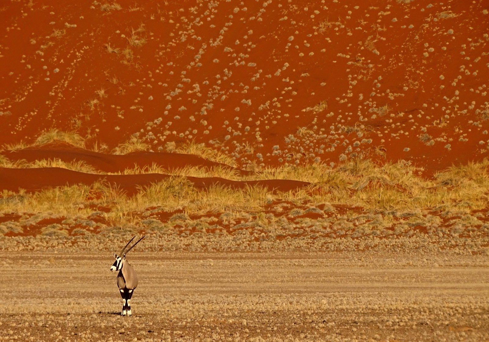

Ce que vous allez vivre
Les temps forts.

La marche d'approche
Une demi-heure dans les dunes, balisée de poteaux, pour gagner le marais caché.

La solitude absolue
Souvent, personne. Juste nous, les arbres morts et le vent.

La photo sans foule
Le rêve des photographes : un décor lunaire, vierge de tout monde.